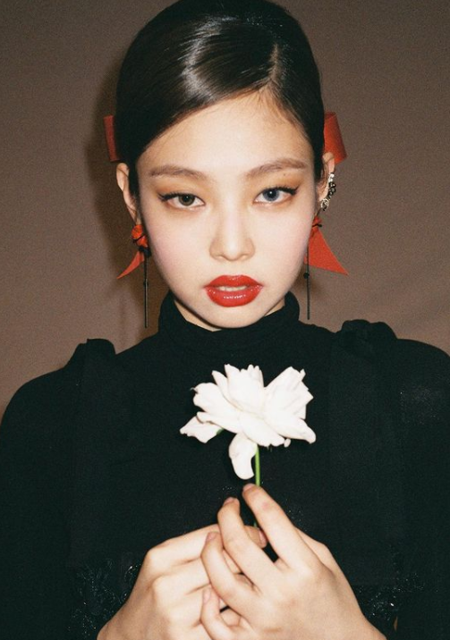
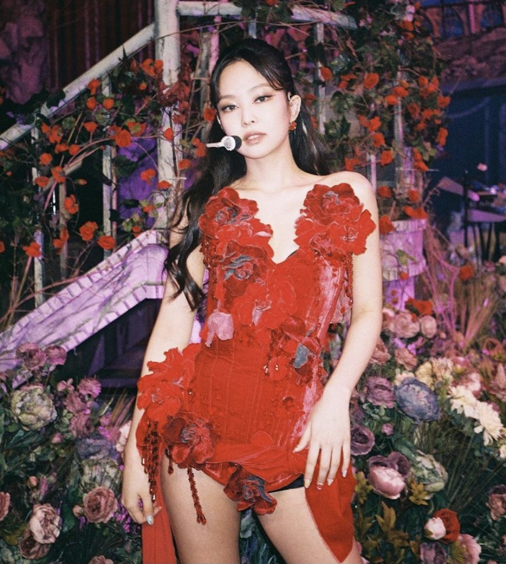
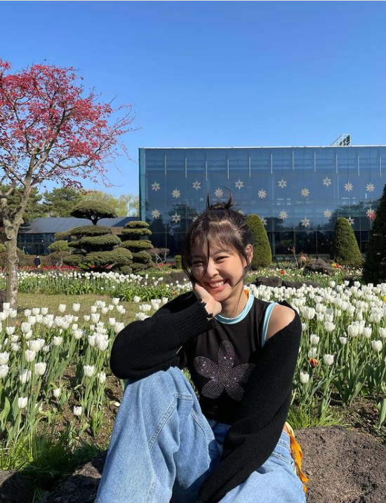

Kim Jennie





Stage name: Jennie
Birth name: Kim Jennie
Nicknames: NiNi, Jendeukie
Position: Main rapper, Lead vocalist
Birthday: January 16, 1996
Zodiac sign: Capricorn
Birthplace: Anyang, South Korea
Height: 5'4" (163 cm)
Facts:
- She was born in Anyang, a city in the province of Gyeonggi, South Korea
- She lived in Auckland, New Zealand for 5 years
- She trained for 5 years and 11 months
- She was the first member to be revealed
- She can speak Korean, English, and Japanese
- She can play acoustic and electric guitar, piano, and flute
- She has 2 dogs: Kai and Kuma
- She has a solo song: "Solo"
- She has performed an unrealeased song called "You and Me" for her solo stage on the Born Pink World Tour